Full name: Document.Expressions.f
Full name: Document.Mutables.x
Full name: Document.RefCells.x
val ref : value:'T -> 'T ref
Full name: Microsoft.FSharp.Core.Operators.ref
--------------------
type 'T ref = Ref<'T>
Full name: Microsoft.FSharp.Core.ref<_>
Full name: Document.HighOrderFuncs.evalWith2AndAdd5
Full name: Document.HighOrderFuncs.succ
Full name: Document.HighOrderFuncs.add
Full name: Document.Lambdas.add
Full name: Document.PartialApplication.succ
Full name: Document.PartialApplication.succ
Full name: Document.Tacit.succ
Full name: Document.Tacit.succ
Full name: Document.Tacit.succ
Full name: Document.Tacit.succ
Full name: Document.Composition.succ
Full name: Document.Composition.square
Full name: Document.Composition.squareOfSucc
Full name: Document.Composition.succOfSquare
Full name: Document.Pipelines.succ
Full name: Document.Pipelines.square
Full name: Document.Recursive.factorial
Full name: Document.Tuples.Person
val string : value:'T -> string
Full name: Microsoft.FSharp.Core.Operators.string
--------------------
type string = System.String
Full name: Microsoft.FSharp.Core.string
val int : value:'T -> int (requires member op_Explicit)
Full name: Microsoft.FSharp.Core.Operators.int
--------------------
type int = int32
Full name: Microsoft.FSharp.Core.int
--------------------
type int<'Measure> = int
Full name: Microsoft.FSharp.Core.int<_>
Full name: Document.Tuples.trainer
Full name: Document.Tuples.name
Full name: Microsoft.FSharp.Core.Operators.fst
Full name: Document.Tuples.age
Full name: Microsoft.FSharp.Core.Operators.snd
{Name: string;
Age: int;}
Full name: Document.Records.Person
Full name: Document.Records.trainer
Full name: Document.Records.trainerAYearAgo
Full name: Document.Records.name
Full name: Document.Records.age
| Trainer
| Student
Full name: Document.DiscriminatedUnions.Person
{X: float;
Y: float;}
Full name: Document.DiscriminatedUnions.Point
val float : value:'T -> float (requires member op_Explicit)
Full name: Microsoft.FSharp.Core.Operators.float
--------------------
type float = System.Double
Full name: Microsoft.FSharp.Core.float
--------------------
type float<'Measure> = float
Full name: Microsoft.FSharp.Core.float<_>
| Circle of center: Point * radius: float
| Rect of corner: Point * width: float * height: float
Full name: Document.DiscriminatedUnions.Shape
module Option
from Microsoft.FSharp.Core
--------------------
type Option<'t> =
| Some of 't
| None
Full name: Document.Options.Option<_>
Full name: Document.ObjectExpresions.mock
type String =
new : value:char -> string + 7 overloads
member Chars : int -> char
member Clone : unit -> obj
member CompareTo : value:obj -> int + 1 overload
member Contains : value:string -> bool
member CopyTo : sourceIndex:int * destination:char[] * destinationIndex:int * count:int -> unit
member EndsWith : value:string -> bool + 2 overloads
member Equals : obj:obj -> bool + 2 overloads
member GetEnumerator : unit -> CharEnumerator
member GetHashCode : unit -> int
...
Full name: System.String
--------------------
System.String(value: nativeptr<char>) : unit
System.String(value: nativeptr<sbyte>) : unit
System.String(value: char []) : unit
System.String(c: char, count: int) : unit
System.String(value: nativeptr<char>, startIndex: int, length: int) : unit
System.String(value: nativeptr<sbyte>, startIndex: int, length: int) : unit
System.String(value: char [], startIndex: int, length: int) : unit
System.String(value: nativeptr<sbyte>, startIndex: int, length: int, enc: System.Text.Encoding) : unit
Full name: Document.TypeExtensions.FirstChar
System.String.Substring(startIndex: int, length: int) : string
Full name: Document.Curring.add
Full name: Document.Curring.addCurried
Full name: Document.Patterns.maybe
struct
member CompareTo : value:obj -> int + 1 overload
member Equals : obj:obj -> bool + 1 overload
member GetHashCode : unit -> int
member GetTypeCode : unit -> TypeCode
member ToString : unit -> string + 3 overloads
static val MaxValue : int
static val MinValue : int
static member Parse : s:string -> int + 3 overloads
static member TryParse : s:string * result:int -> bool + 1 overload
end
Full name: System.Int32
System.Int32.TryParse(s: string, style: System.Globalization.NumberStyles, provider: System.IFormatProvider, result: byref<int>) : bool
Full name: Document.ActivePatterns.number
Full name: Document.ActivePatterns.( |IsFizz| )
Full name: Document.ActivePatterns.( |IsBuzz| )
Full name: Microsoft.FSharp.Core.ExtraTopLevelOperators.printfn
 meets 
Funktionale Programmierung mit F#
Es geht um die Kernkonzepte der funktionalen Programmierung. Dazu gehört zum Beispiel Immutability, Data Types, Partial Application und Pattern Matching die in praktischen Übungen angewendet werden. Dabei werden auch F#-spezifische Sprachfeatures wie Active Patterns und Object Expressions behandelt.
Voraussetzungen
Themen
- function definition
- functional purity
- pure - no side effects
- expressions - immutable values
- mutable keyword [F#]
- reference cells [F#]
- first class functions
- higher order functions
- lambdas
- partial application
- Tacit programming, i.e. point-free style
- composition
- pipelines [F#]
- recursion
Themen
- type system
- type inference
- different types
- design for correctness
- make illegal states unrepresentable
- unit [F#]
- object expressions [F#]
- type extensions [F#]
- currying = first class functions + tuple
- pattern matching
- active patterns [F#]
function definition
- Funktion ist die Mutter von Allem
- EVA = Eingabe => Verarbeitung => Ausgabe
- Eine Funktion, aka Abbildung, in der Mathematik ist genau dadurch definiert: eine Definitionsmenge, eine Zielmenge und eine Abbildungsvorschrift.
- Eine Funktion ist eine Relation zwischen der Definitions- und Zielmenge, die linkstotal und rechtseindeutig ist. (What the hack?)
function definition
- Linkstotal: Jeder Wert der Definitionsmenge kann als Eingabe verwendet werden. Die Funktion ist für jeden Wert definiert.
- Rechtseindeutig: Jedem Wert der Definitionsmenge ist nur genau ein Wert der Zielmenge zugeordnet.
Beispiel:
// Nachfolger einer natuerlichen Zahl
f(x) = x + 1 |
functional purity
pure - no side effects
Eigenschaften, welche eine Funktion erfüllen muss:
- bei gleicher Eingabe, liefert diese gleiche Ausgabe
= determiniert (weniger als deterministisch) - keine Seiteneffekte
(besser als Nebeneffekte genannt, und noch besser als Wirkung)
= wirkungsfrei, ändert keinen Programmzustand (IO, Zeit o.ä.)
functional purity
expressions - immutable values
- Werte werden an Namen gebunden, nicht zugewiesen!
- Es gibt keine Variablen!
Beispiel:
1: 2: |
let f x = x + 1 let f x = x * 2 // Fehler, da f nicht geändert werden darf. |
functional purity
expressions - immutable values
mutable keyword [F#]
- Man kann in F# auch imperativ programmieren.
- Also Variablen haben, jedoch gilt es diese zu vermeiden.
Beispiel:
1: 2: |
let mutable x = 1 x <- x + 1 |
functional purity
expressions - immutable values
reference cells [F#]
- Manchmal ist
mutablenicht genug und man brauch eine Referenzzelle. - Der Compiler weist darauf hin, z.B. in einer Closure (seq-Expression).
Beispiel:
1: 2: |
let x = ref 1 x := !x + 1 |
first class functions
higher order functions
Wenn man Funktionen als Funktionseingabe bzw. -ausgabe verwenden kann.
Beispiel:
1: 2: 3: 4: 5: 6: |
let evalWith2AndAdd5 f = f 2 + 5 let succ x = x + 1 evalWith2AndAdd5 succ let add x y = x + y |
first class functions
lambdas
Anonyme Funktionen
Beispiel:
1: 2: 3: |
let add x y = x + y let add x = fun y -> x + y let add = fun x -> (fun y -> x + y) |
first class functions
partial application
Binden einer Funktionseingabe an einen speziellen Wert.
Beispiel:
1: 2: |
let succ x = add 1 x let succ x = 1 + x |
first class functions
partial application
Tacit programming, i.e. point-free style
Also eta-reduction
Beispiel:
1: 2: 3: 4: 5: |
let succ x = add 1 x let succ = add 1 let succ x = 1 + x let succ x = (+) 1 x let succ = (+) 1 |
first class functions
composition
Komposition bzw. Verkettung von Funktionen.
f: a -> b, g: b -> c => (>>) f g: a -> c
(>>) f g x = g(f(x)) |
Beispiel:
1: 2: 3: 4: 5: 6: 7: |
let succ x = 1 + x let square x = x * x let squareOfSucc = succ >> square let succOfSquare = square >> succ squareOfSucc 2 succOfSquare 2 |
first class functions
composition
pipelines [F#]
Werte an Funktionen übergeben.
v: a, f: a -> b => (|>) v f: a -> (a -> b) -> b
(|>) v f = f v |
Beispiel:
1: 2: 3: 4: 5: 6: 7: |
let succ = (+) 1 let square x = x * x 2 |> succ 2 |> square 2 |> succ |> square = squareOfSucc 2 2 |> square |> succ = succOfSquare 2 |
first class functions
recursion
- Abbruchbedingung und Rekursionsvorschrift!
- Explizite Kennzeichnung rekursiven Funktionen.
Beispiel:
1: 2: 3: |
let rec factorial n = if n = 1 then 1 else n * factorial (n - 1) |
type system
type inference
- Typeninferenz ist eine schöne Sache, damit brauchen wir fast nie den Datentypen angeben.
- Bisher haben wir bei der Definitionen der Funktionen nie die Datentypen angegeben.
type system
different types
- Ist sehr reichhaltig und das sollte ausgenutzt werden.
- Es gibt die allbekannten primitiven Typen wie
- int, float, bool und string.
- Dann haben wir auch schon Funktionstypen kennen gelernt, wie
- int -> int.
- Natürlich gibt es das bekannte Array und die unbekannte Liste.
type system
different types
- Tuple, mit diesem können Daten unterschiedlichen Typs zusammengefasst werden.
Beispiel:
1: 2: 3: 4: 5: 6: |
type Person = string * int let trainer = ("Max", 33) let name = fst trainer let age = snd trainer let name, age = trainer |
type system
different types
- Record, auch mit diesem können Daten unterschiedlichen Typs zusammengefasst werden, bietet einwenig mehr als Tuple.
Beispiel:
1: 2: 3: 4: 5: 6: 7: 8: 9: 10: |
type Person = { Name: string; Age: int } let trainer = { Name = "Max"; Age = 33 } let trainerAYearAgo = { trainer with Age = 32 } let name = trainer.Name let age = trainer.Age let { Name = name; Age = age } = trainer let { Name = name } = trainer let { Age = age } = trainer |
type system
different types
- Discriminated union, mit diesem können unterschiedliche Ausprägungen zu einem zusammengefasst werden.
Beispiel:
1: 2: 3: 4: 5: 6: 7: 8: |
type Person = | Trainer | Student type Point = {X: float; Y: float} type Shape = | Circle of center: Point * radius: float | Rect of corner: Point * width: float * height: float |
type system
different types
Option
- Ist wie Nullable, geht aber auch mit Klassen.
Just say NO to NullPointerExceptions @jessitron
Beispiel:
1: 2: 3: |
type Option<'t> = | Some of 't | None |
type system
different types
- Tuple und Record sind die sogenannten Produkttypen.
- Discriminated union ist ein Summentyp.
type system
different types
design for correctness / make illegal states unrepresentable
Mit vorgestellten Möglichkeiten ist es ein Leichtes ein korrektes Abbild der Domäne zu schaffen, damit nur die Zustände darstellbar werden, welche auch tatsächlich erlaubt bzw. möglich sind.
type system
unit [F#]
Manchmal, wenn man Funktionen mit Wirkung haben muss,
z.B. IO, Zeit oder Random,
dann gibt es entweder keine Eingabe oder keine Ausgabe.
In anderen Sprachen wird dafür entweder ein Schlüsselwort oder gar Konstrukt verwendet.
In F# gibt es dafür einen speziellen Datentypen
unit mit einzigem Wert ().
type system
object expressions [F#]
Anonyme Objekte
Beispiel:
1:
|
let mock = { new IInterface with member this.Method() = "3" } |
type system
type extensions [F#]
Erweiterungsmethoden
Beispiel:
1: 2: |
type System.String with member x.FirstChar() = x.Substring(0, 1) |
currying
tuple vs. first class functions
Beispiel:
1: 2: |
let add(x, y) = x + y let addCurried x y = add (x, y) |
pattern matching
Switch statements on steroids.
Beispiel:
1: 2: 3: 4: |
let maybe = Some "Name" match maybe with | Some value -> value | None -> "Unbekannt" |
pattern matching
Switch statements on steroids.
Beispiel:
1: 2: 3: |
match System.Int32.TryParse("Max") with | true, value -> value | false, _ -> -1 |
pattern matching
active patterns [F#]
Erweiterung des Matching mit eigenen Fällen.
Beispiel:
1: 2: 3: 4: 5: 6: 7: |
let (|IsFizz|) n = n % 3 = 0 let (|IsBuzz|) n = n % 5 = 0 let number = 5 match number with | IsFizz -> "Fizz" | IsBuzz -> "Buzz" | number -> string number |
pattern matching
active patterns [F#]
Erweiterung des Matching mit eigenen Fällen.
Beispiel:
1: 2: 3: 4: 5: 6: 7: 8: |
let (|Number|_|) (s:string) = match System.Int32.TryParse(s) with | true, value -> Some value | false, _ -> None let text = "5" match text with | Number x -> x + 1 | _ -> -1 |
pattern matching
active patterns [F#]
Erweiterung des Matching mit eigenen Fällen.
Beispiel:
1: 2: 3: 4: 5: 6: 7: 8: 9: 10: 11: 12: |
let (|Fizz|Buzz|FizzBuzz|None|) n = match n with | IsFizz & IsBuzz -> FizzBuzz | IsFizz -> Fizz | IsBuzz -> Buzz | _ -> None let number = 60 match number with | FizzBuzz -> printfn "number is FizzBuzz" | Fizz -> printfn "number is Fizz" | Buzz -> printfn "number is Buzz" | None -> printfn "number is None" |
Bonus stuff
workflows
computational expressions [F#]
agents
mailbox processor [F#]
Links
- The F# Software Foundation
- Try F#
- F# for fun and profit
- F# Active Patterns
- F# for you
- F# cheat sheet
Notes
- indentation is for scope
- modules are for code organization
- object oriented programming in F#
- unit of measure